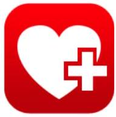
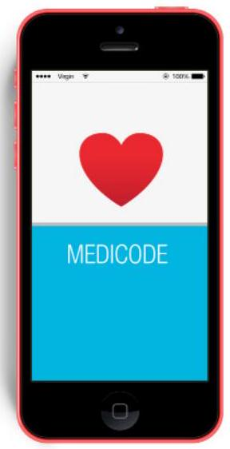
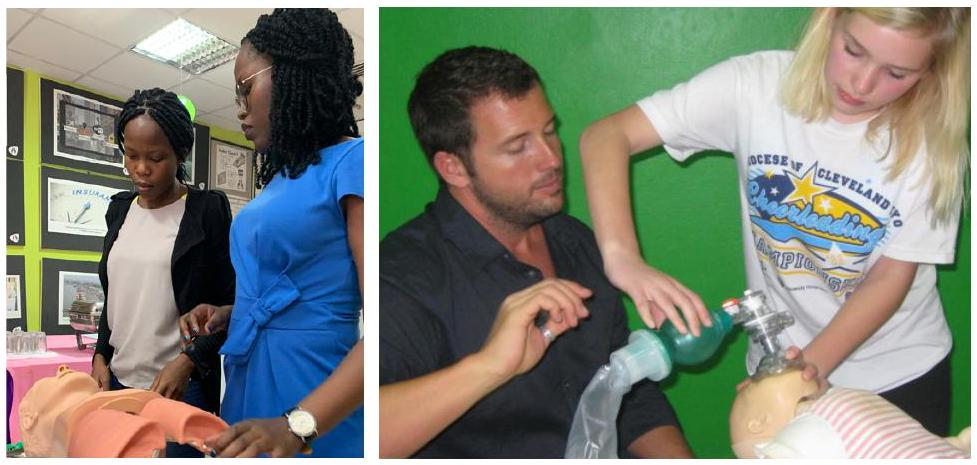
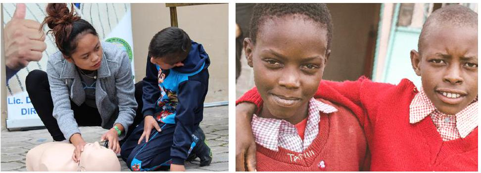

Essentials, Tools, & Review
ACLS ESSENTIALS
- Prompt recognition and intervention with high-quality CPR is critical in any arrest situation.
- Mentally prepare for resuscitation as you approach the scene and the individual.
- Scene safety is critical; do not get injured yourself.
- BLS focus is early CPR and early defibrillation.
- Do not attempt to place an oropharyngeal airway in an awake individual.
- Pull the jaw up into the mask; do not push the mask onto the face as it may close the airway.
- IV or IO is the preferred routes for drug delivery; ET route is discouraged and unpredictable.
- The dose of amiodarone is different for VF and VT with a pulse.
- Resume chest compressions immediately after delivering a shock.
- Targeted temperature management is utilized after return of spontaneous circulation.
- Learn specific cardiac rhythms: sinus tachycardia, SVT, atrial fibrillation/flutter, VF, VT, torsades de pointes, and asystole.
- Confirm asystole in two separate leads.
- VF and pulseless VT are treated the same: deliver a shock.
- Remember the reversible causes of cardiac arrest: the H's and the T's.
- Capnography is a valuable tool in resuscitation. If PETCO2 is lower than 10 mmHg, attempt to improve CPR quality and investigate the advanced airway placement.
- If capnography is still less than 10 mmHg, consider termination of efforts.
- Use nitroglycerin with caution in individuals with inferior myocardial infarction; avoid if systolic blood pressure (SBP) is less than 90 mmHg, or if taking erectile dysfunction medications (phosphodiesterase inhibitors) within 24 hours.
- Confusion may be a presenting sign of a stroke.
ADDITIONAL TOOLS

MEDICODE
With MediCode, you no longer will have to carry a set of expandable cards with you at all times while at work. You will never have to waste valuable time in an emergency situation searching through multiple algorithms until you find the right one. All of the algorithms are now accessible from the palm of your hand, and you will be selecting your desired algorithm by memory in no time. Choose between multiple viewing options and easily share algorithms with co-workers and friends through email and social media.
To improve functionality and speed in obtaining your desired algorithm as quickly as possible in an emergency, they have been divided between BLS, ACLS, PALS, and CPR. All are accessible from the home screen. The individual algorithms included in this app are:
- Basic Life Support (BLS)
- Advanced Cardiac Life Support (ACLS)
- Pediatric Advanced Life Support (PALS)
- Cardiopulmonary Resuscitation (CPR) AED, and First Aid
CERTALERT+
CertAlert+ is the perfect app to minimize a potential area of stress and distraction in your life. With CertAlert+, you will have all your licenses and certifications in one place anytime you need them. We will keep track and remind you when your expiration date approaches, and we will help you with your registration whenever possible.
With CertAlert+, you can:
- Compile all required licenses and certifications in one location.
- Take photos (front and back) of certification cards and licenses for simple reference.
- Record all expiration dates and store with ease.
- Choose when you want to be reminded of your approaching expiration dates.
- Send all license or certification information directly to your email after exporting from the app.
- Quick access to easily register for online certification and recertification courses.
ACLS REVIEW QUESTIONS

- The following are included in the ACLS Survey:
- Airway, Breathing, Circulation, Differential Diagnosis
- Airway, Breathing, Circulation, Defibrillation
- Assessment, Breathing, Circulation, Defibrillation
- Airway, Breathing, CPR, Differential Diagnosis
- The primary focus of treating cardiac arrest is:
- Effective CPR
- Early defibrillation
- Drug administration
- Both A and B
- Which of the following is not an example of an advanced airway?
- Oropharyngeal airway
- Esophageal-tracheal tube
- Laryngeal mask airway
- Combitube
- The following are possible effects of hyperventilation:
- Increased intrathoracic pressure
- Decreased venous return to the heart
- Both A and B
- None of the above
- The normal sinus rhythm of the heart starts in the:
- Left ventricle
- Atrioventricular node
- Sinoatrial node
- Right ventricle
- What is high-quality CPR?
- 80 compressions per minute at a depth of at least one-inch (2.5 cm)
- 100 to 120 compressions per minute at a depth of 2 to 2.4 inches (5 to 6 cm)
- 80 compressions per minute at a depth of at least two inches (5 cm)
- 100 compressions per minute at a depth of at least one inch (2.5 cm)
- Before placement of an advanced airway, the compression to ventilation ratio during adult CPR is:
- 30:1
- 30:2
- 15:1
- 20:2
- You should _____ in an individual with ventricular fibrillation immediately following a shock.
- Resume CPR
- Check heart rate
- Analyze rhythm
- Give amiodarone
- _____ joules (J) are delivered per shock when using a monophasic defibrillator.
- 380
- 320
- 340
- 360
- The following medication(s) can be used to treat hypotension during the post-cardiac arrest phase:
- Dopamine
- Milrinone
- Amiodarone
- Both A and B
- The following antiarrhythmic drug(s) can be used for persistent ventricular fibrillation or pulseless ventricular tachycardia, except:
- Amiodarone
- Lidocaine
- Atropine
- Epinephrine
- Which of the following is not a potential cause of PEA?
- Toxins
- Hyperkalemia
- Hyperventilation
- Trauma
- Which of the following is a shockable rhythm?
- Ventricular fibrillation
- Ventricular tachycardia (pulseless)
- Torsades de Pointes
- All of the above
- The following drug(s) may be used in an ACS individual for cardiac reperfusion:
- Fibrinolytic therapy
- Epinephrine
- Atropine
- Both A and C
- All of the following are bradycardic rhythms except:
- Atrial fibrillation
- First-degree heart block
- Mobitz Type I
- Third-degree heart block
- _____ access is preferred in arrest due to easy access and no interruption in CPR.
- Central
- Peripheral
- Intraosseous
- Endotracheal
- Which of the following is first-line treatment for ACS?
- Morphine
- Aspirin
- Nitroglycerin
- All of the above
- The following are classic signs of an acute stroke except:
- Facial droop
- Arm drift
- Abnormal speech
- Seizure
- Which of the following is not found within the 8 D's of stroke care?
- Detection
- Dispatch
- Delivery
- Defibrillate
ANSWERS
1. A: Airway, Breathing, Circulation, Differential Diagnosis
2. D: Both A and B
3. A: Oropharyngeal airway
4. C: Both A and B
5. C: Sinoatrial node
6. B: 100 to 120 compressions per minute at a depth of 2 to 2.4 inches (5 to 6 cm)
7. B: 30:2
8. A: Resume CPR
9. D: 360
10. A: Dopamine
11. C: Atropine
12. C: Hyperventilation
13. D: All of the above
14. A: Fibrinolytic therapy
15. A: Atrial fibrillation
16. B: Peripheral
17. D: All of the above
18. D: Seizure
19. D: Defibrillate
About the Publisher
Who is the Disque Foundation?
The Disque Foundation was created for the sole purpose of empowering others to save lives! We do this by providing advanced healthcare education to underserved populations of the U.S. and the world through technology.
To fulfill this mission, we have created the Save a Life Initiative. We offer the world's first free life support training courses online through our partnership with SaveaLife.com (Save a Life Certifications by NHCPS). Saving lives means giving others the chance to make a difference in the world. Our goal is to empower 10 million people with the ability to save a life by 2025.
How can I help?
Through the help of committed supporters like yourself, the Disque Foundation will have the ability to grow and expand our cause across the globe. Please help us by making a tax-deductible gift to the Disque Foundation. A donation of any size will help support our mission and your generous contribution will go directly to strengthening our efforts to empower others to save lives.
Donations can be made at DisqueFoundation.org or by mailing a check to:
Disque Foundation Donations Department
1609 W 100 S.
Brownstown, IN 47220
For more information, contact us at info@disquefoundation.org.
Learn more at DisqueFoundation.org
Save a Life INITIATIVE™
The idea behind the Save a Life Initiative is simple - take the same advanced life-saving training we developed for health care providers, and give it to the underserved, at home and abroad. We work in conjunction with SaveaLife.com to fulfill its mission of advancing health care education to the underserved through advanced technology. When we put the knowledge, skills, and ability to perform CPR and other proven techniques in people's hands around the world, the power to save lives is possible.
Presented by the: